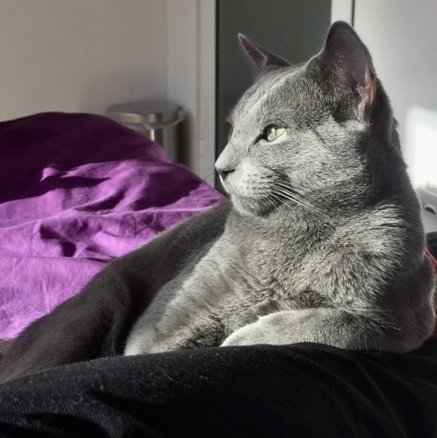

Русская голубая кошка — порода домашней кошки, признанная международными
фелинологическими организациями, которая стала известна в России только
с началом фелинологического движения.
Русская голубая кошка c успехом разводится за рубежом. Она является одной
из самых популярных пород короткошерстных кошек.
